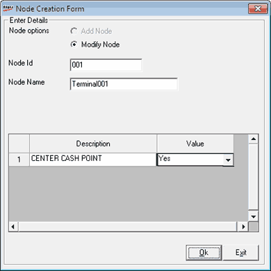

In the case of a multi user environment, you can configure any node in the network as the centre cash collection point by modifying the relevant node in the Node Management option under Setup > Supervisory Functions as shown.

By default, the value for the description CENTER CASH POINT is selected as No. Set the value to Yes to configure the corresponding node as the centre cash collection point in the network. Additionally, there can be one more option (description) as CASH COLLECTION POINT, if configured in the template.